「因為有些記憶，只存在於老師的口中、居民的腦海裡。
我們想在它們消失之前，把它們留下來。」
ABOUT THIS PLACE
關於這片土地
1991 年，雲林科技大學在這片土地上誕生。
三十多年來它不只是培育人才的學府，更成為雲林地景與文化記憶的一部分。
從甘蔗田到智慧校園
這片土地的故事，從農業到科技，從寧靜到活力，見證了雲林的轉型與成長。
透過珍貴的歷史照片，回顧雲科大從籌備到茁壯的每一個重要時刻。
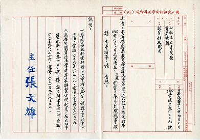
1989年
九月 國立雲林技術學院籌備處成立，張文雄博士為籌備處主任。
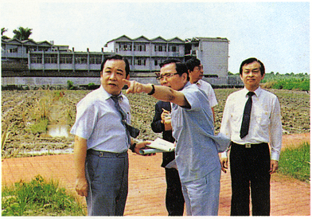
1989年
籌備處勘察建校用地。
1989年
八月一日 民國78年 籌備處張主任文雄宣誓就職教育部趙次長金祈監誓。
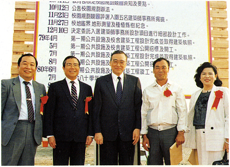
1989年
十一月二十七日 民國78年 校地啟用典禮毛高文部長暨許文志縣長蒞臨指導。
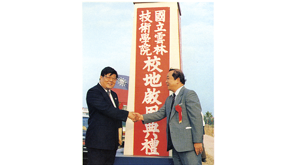
1989年
十一月二十七日 民國78年 校地啟用典禮與廖福本立法委員合影。
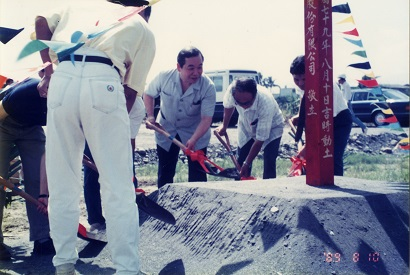
1990年
八月 舉行建校第一期工程奠基破土典禮。
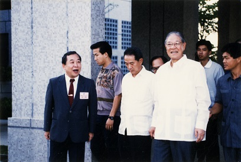
1991年
三月廿日 李登輝總統 蒞校巡視。
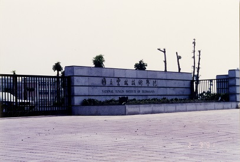
1991年
七月一日 國立雲林技術學院正式成立，張文雄博士為首任院長。設四年制機械工程等八個技術系。
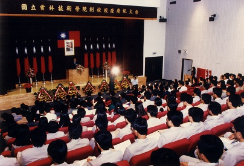
1991年
十一月廿七日為本校校慶日。
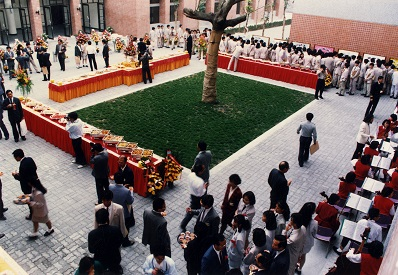
1991年
十一月廿七日校慶活動。
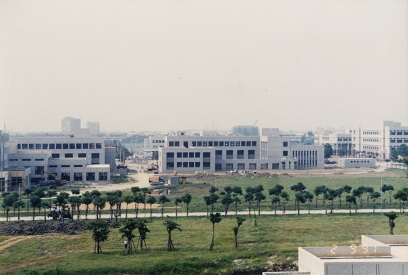
1991年
行政、教學大樓、共同、理科新建工程第一期工程陸續完工。
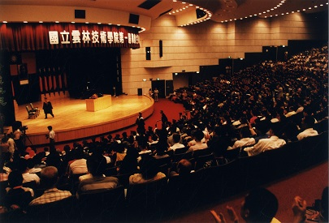
1994年
六月十二日 舉行第一屆畢業生畢業典禮，監察院長陳履安博士蒞臨演講。
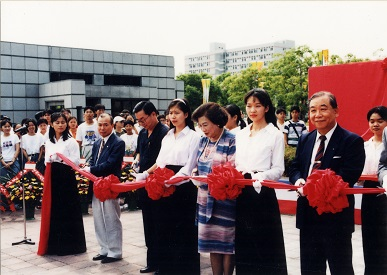
1997年
八月一日 本校改名為國立雲林科技大學。
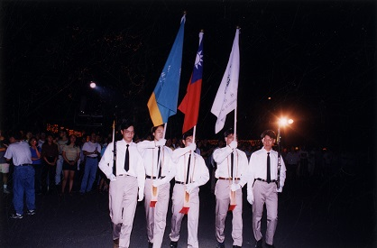
1997年
改制科技大學慶祝活動。
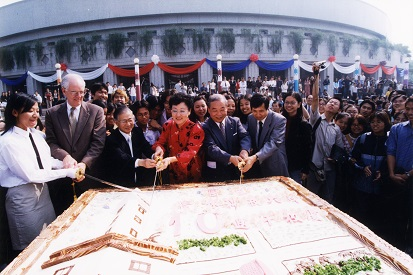
2000年
十一月二十七日 舉行建校十週年校慶。
我們為什麼要做這件事？
📖 那些快被遺忘的故事
那些快被遺忘的故事你知道嗎？ 曾經的雲科大，停車是不用收費的， 龍潭路還不是現在的樣子。 傍晚時分，沒有外送機車的呼嘯聲，只有附近居民牽著孩子散步的笑聲； 老師的小孩們在草地上玩鬼抓人，那時的校園，像是一座沒有圍牆、也沒有門票的遊樂園。
還有那條每到夏天就掉滿芒果的大道，以及宿舍波羅蜜掉下來會被打掃阿姨分享……
這些故事，課本裡不會寫，Google 地圖上也找不到。 但它們是這片土地最真實的溫度。
這些故事，課本裡不會寫，官網上也找不到。 但它們是這片土地最真實的溫度。
💾用科技保存溫度
我們不想讓這些畫面成為絕響。 我們用網站記錄口述歷史， 用 雲坐標 App 在原地重現舊時光。 邀請你親自走進校園探索那些『看不見的風景』。
希望十年後、二十年後， 當有人問起「雲科大以前是什麼樣子」的時候， 這裡會有答案，而且是有溫度、有聲音的答案。」
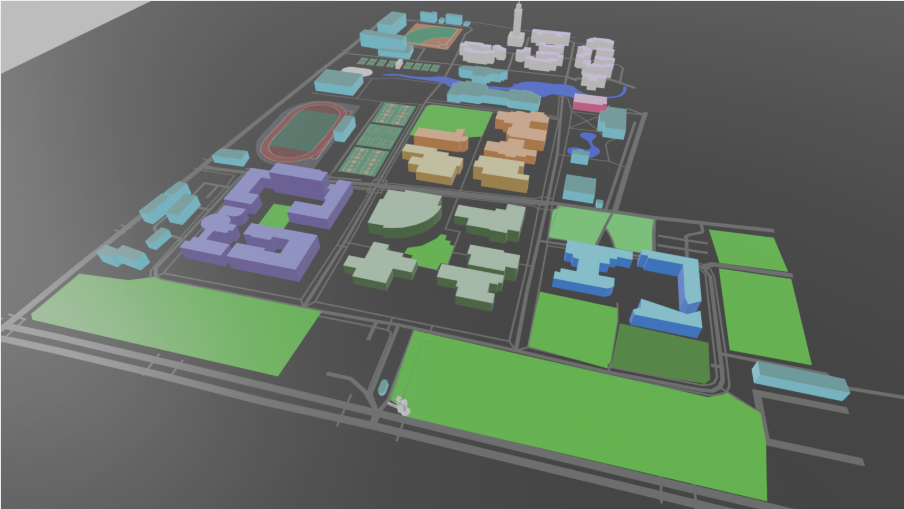